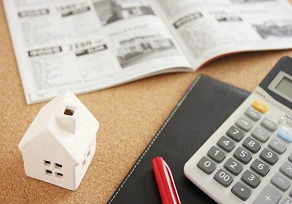

家にお金をかけすぎない
こんにちは。富山で自然素材にこだわるホンモノの家、フジ創アイノスです。 ✔これからの家づくりの考え方 これから日本が迎える社会は、少子化であり超高齢化社会です。 その影響を受け、今後は、社会保険料・税金アップによる可処分
続きを読む →FUJISOU AINOS JOURNAL
家づくりのこと、暮らしのこと。
日々の想いを、お伝えします。
家づくりについて 555件 ／ 新しい記事から 6・24ページ

こんにちは。富山で自然素材にこだわるホンモノの家、フジ創アイノスです。 ✔これからの家づくりの考え方 これから日本が迎える社会は、少子化であり超高齢化社会です。 その影響を受け、今後は、社会保険料・税金アップによる可処分
続きを読む →こんにちは。富山で自然素材にこだわるホンモノの家、フジ創アイノスです。 ▼コンパクトなのに明るくて開放的でゆったりしている秘密 こんなにコンパクトなお家なのに、明るく開放的でゆったりしているように感じるのは、このお家が
続きを読む →こんにちは。富山で自然素材にこだわるホンモノの家、フジ創アイノスです。 "床面積23坪弱の家"と聞くと、とても小さくて狭い家を想像してしまうかもしれません。 家族4人がその広さのお家で暮らすとなれば、なおのこと「そんな広
続きを読む →
こんにちは。富山で自然素材にこだわるホンモノの家、フジ創アイノスです。 ✔スポット的にかかる費用 家を美しく保ち、かつ長持ちさせるためには、定期的にメンテナンスをしなければいけません。 外部塗装をする場合、足場も含めると
続きを読む →こんにちは。富山で自然素材にこだわるホンモノの家、フジ創アイノスです。 家づくりの予算を考える時、最初にかかる土地費用や建築費用、庭の費用といったイニシャルコストばかりに目が行きがちですが、同時に、今後ずっとかかり続ける
続きを読む →
こんにちは。富山で自然素材にこだわるホンモノの家、フジ創アイノスです。 SNS上で、「家づくりで後悔している点は？」というアンケートがありました。 一番多かったのは、「窓」でした。 「ここに作った窓がいらなかった」、「思
続きを読む →
こんにちは。富山で自然素材にこだわるホンモノの家、フジ創アイノスです。 北側接道で奥行きが浅く、かつ南に隣接して家が建っている日当たりが悪い土地で家を建てる場合、光の採り込み方に工夫が必要です。 南にリビングを配置し大き
続きを読む →こんにちは。富山で自然素材にこだわるホンモノの家、フジ創アイノスです。 例えば、以下の2つの選択肢があった場合、あなたはどちらを選ばれますか？ 1つは、親が所有している土地があり、そこに家を建てれば土地代は必要なくなるが
続きを読む →
こんにちは。富山で自然素材にこだわるホンモノの家、フジ創アイノスです。 多くの新婚カップルは、最初は賃貸に住み、いずれ頭金を貯めてからマイホームを購入しようと考えます。 ですが、家賃を払いながら頭金を十分に貯めるのは、な
続きを読む →
こんにちは。富山で自然素材にこだわるホンモノの家、フジ創アイノスです。 今日の日中は暑かったですね。 富山県はいま乾燥してきている時期です。体調管理に気をつけてくださいね。 人が快適に感じる湿度は40～60％といわれてい
続きを読む →こんにちは。富山で自然素材にこだわるホンモノの家、フジ創アイノスです。 賃貸に住んでいると、一生にいくら家賃を払うのでしょうか。 30歳の人が85歳まで毎月家賃を払うと考えると「残り55年間」払い続けなければなりません。
続きを読む →
こんにちは。富山で自然素材にこだわるホンモノの家、フジ創アイノスです。 変動型の住宅ローンのメリットは、固定型に比べて金利が安いことです。 また、借入時にかかる経費が固定型よりも少ないのも大きな魅力です。 この他、固定金
続きを読む →こんにちは。富山で自然素材にこだわるホンモノの家、フジ創アイノスです。 住宅ローンには、変動金利と固定金利の２つの種類があります。 どちらにもメリット、デメリットがありますので、どちらが自分の状況に適しているのかを知るこ
続きを読む →
こんにちは。富山で自然素材にこだわるホンモノの家、フジ創アイノスです。 ✔平屋のデメリットとは？ 平屋にした場合のデメリットは、日当たりが良い土地の場合、リビングや各居室が全て外からの視線にさらされやすくなってしまうとい
続きを読む →こんにちは。富山で自然素材にこだわるホンモノの家、フジ創アイノスです。 色々なメリットがある平屋ですが、一般的に平屋には「価格が高くなる」というイメージと、「土地がかなり広く必要である」というイメージがあります。 しかし
続きを読む →こんにちは。富山で自然素材にこだわるホンモノの家、フジ創アイノスです。 家を建てる誰もが、リビングダイニングキッチンを明るく開放的な空間にしたいとお考えだと思います。 そのために、出来るだけリビングダイニングを広くつくり
続きを読む →こんにちは。富山で自然素材にこだわるホンモノの家、フジ創アイノスです。 平屋の家は、耐震性、耐久性、将来性、住みやすさ、コスト面など多くのメリットがあります。 前回ご紹介させていただいた間口9m×奥行き18mの50坪の南
続きを読む →こんにちは。富山で自然素材にこだわるホンモノの家、フジ創アイノスです。 例えば、50坪で、間口が９mで、奥行きが18m、そして南向きの土地があるとします。 このような場合、一般的には2階建ての家が建ちます。 1階にはリビ
続きを読む →
こんにちは。富山で自然素材にこだわるホンモノの家、フジ創アイノスです。 今回は、暮らしやすくコストも安い「平屋」についてお話しします。 例えば、2階建て住宅の多くが、洗濯物を2階のベランダで干しています。 しかし洗濯機が
続きを読む →
こんにちは。富山で自然素材にこだわるホンモノの家、フジ創アイノスです。 アイノスの家でよく驚かれるのが「価格」です。 こんなお客様の声をいただいています。 「家族の健康を考えて、自然素材の家が良いと思いましたが、実際にい
続きを読む →こんにちは。富山で自然素材にこだわるホンモノの家、フジ創アイノスです。 アイノスの家は「ブライダルハウス」という名前でもご案内しています。 それは、『結婚する人にこそ安心して子育てできる自然素材の注文住宅に住んでいただき
続きを読む →こんにちは。富山で自然素材にこだわるホンモノの家、フジ創アイノスです。 家づくりをするにあたって、毎月の返済額は、家賃ぐらいが妥当なのか？家賃より高くなって当たり前なのか？家賃より低く設定すべきなのか？悩んでしまいますよ
続きを読む →
こんにちは。富山で自然素材にこだわるホンモノの家、フジ創アイノスです。 今回はフジ創アイノス代表取締役、荒井一の家づくりに対する想いをご紹介します。 住宅業界には、お客さんの立場に立たない業者が多いことに疑問を持っていた
続きを読む →
こんにちは。富山で自然素材にこだわるホンモノの家、フジ創アイノスです。 自然素材の家は、健康面が安心、ということ以外にも、お子さんのいるご家族におすすめなポイントがあります。 それは壁や床のメンテナンスが自分で簡単にでき
続きを読む →